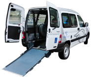

;
;

Facile à prendre en main, confortable et maniable, la Peugeot iOn est idéale pour des déplacements en ville ou dans l’arrière pays. Elle vous permet de transporter jusqu’à quatre personnes et quelques paquets dans son coffre (banquettes rabattables).

Une conduite moyenne vous permettra de faire environ 100km* avec une charge.
Avec leur volume utile de 3m3, les Citroën Berlingo et Peugeot Partner sont les solutions à tous vos problèmes de transport d'objets encombrants. Ces véhicules utilitaires deux places ont été conçus pour privilégier un grand espace de chargement.
Une conduite moyenne vous permettra de faire environ 80km* avec une charge.
Très compacte, et ludique, la mia est la voiture idéale pour circuler en ville. Elle possède deux larges portes coulissantes qui permettent un accès très facile aux trois places de ce petit véhicule.

Une conduite moyenne vous permettra de faire environ 70km* avec une charge.
Autobleue pense à tout le monde! Un Peugeot Partner Autobleue a été spécialement aménagé pour pouvoir accueillir une personne en fauteuil. Si vous souhaitez transporter une personne en fauteuil roulant en toute sécurité, pensez à Autobleue!

Une conduite moyenne vous permettra de faire environ 80km* avec une charge.
- *L'autonomie de votre véhicule électrique Autobleue est de la responsabilité du conducteur. Elle dépend beaucoup de votre façon de conduire ; conduisez de façon économique pour l’augmenter!
- les voitures sont toutes équipées de GPS qui permettent un guidage et un retour en station simple!
- vous pouvez à tout instant contacter notre assistance 24h/24 en pressant sur le bouton SOS de l’écran!
Dans les Autobleue, un écran vous permet à tout moment de profiter de la fonction guidage GPS : vous pourrez être guidé vers la destination de votre choix ou revenir à la station en toute sérénité.